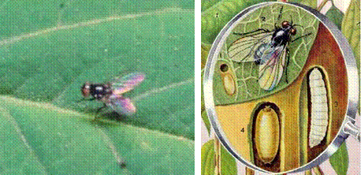

| Home |
| PEST OF PEAS |
MAJOR PESTS |
| 1. Pea Leaf-miner |
| 2. Pea Stem Fly |
| 3. Pea Aphid |
MINOR PESTS |
| 1. American Bollworm |
| 2. Pea Pod Borer |
| Questions |
| Download Notes |
PEAS :: MAJOR PESTS :: PEA STEM FLY
2. Pea Stem Fly: Ophiomyia phaseoli (Agromyzidae: Diptera)
Distribution and status: Widely distributed in India, Sri Lanka, the Philippines, and China Sporadic pest.
Host range: Peas - Phaseolus mungo L., Phaseolus aconitifolius Jacq., soybean, cowpeas, Lablab niger L.
Damage symptoms
The maggots bore into the stem thereby causing withering and ultimate drying of the affected shoots, thus reducing the bearing capacity of the host plants. The adults also cause damage by puncturing the leaves, and the injured parts turn yellow. The damage is more severe on seedlings than on the grown up plants.
Bionomics
The adult flies are metallic black. They are active in summer and mate 2-6 days after emergence. The female lays 14-64· elongate, oval and white eggs into the leaf tissue with the help of its elongated ovipositor. The eggs hatch in 2-4 days They pass through three instars and the larval development is completed in 6-12 days. The larva pupates within its gallery and the pupal period lasts 5-19 days. The female flies live for 8-22 days and the males for 11 days. The pest completes 8-9 generations from July to April and shifts from one host plant to the other in various seasons. It passes winter as larva or as pupa.
|  |
Management
- Avoid sowing of the crop earlier than mid-October to check the attack of the pest.
- Remove and destroy all the affected branches during the initial stages of attack.
- Sow the crop in the second fortnight of October to escape the damage of the pest.
- Apply 7.5 kg of phorate 10G or 25 kg of carbofuran 3 G per ha in furrows at the time of sowing
- On the crop, spray three times 750 ml of oxydemeton methyl 25 EC in 750 L of water per ha. The first application should be just after germination and the other two at an interval of 2 weeks each.